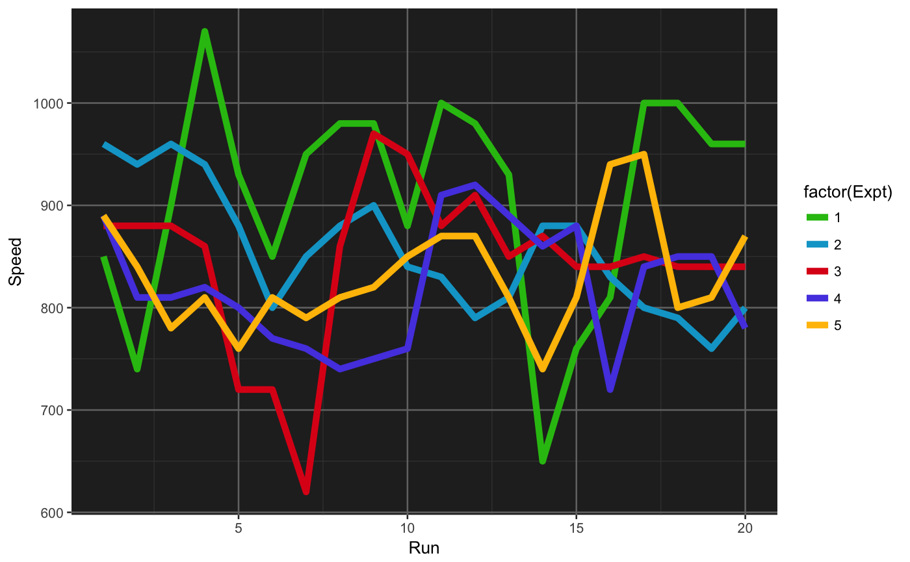
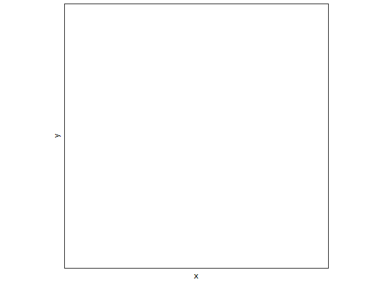
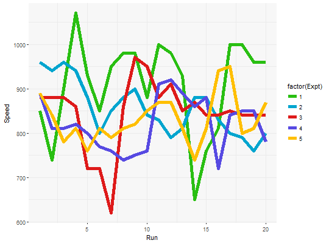

continuous jcolors color scales
continuous jcolors color scales
jcolors color scales
scale_color_jcolors_contin(palette = c("default", "pal2", "pal3", "rainbow"), ...) scale_colour_jcolors_contin(palette = c("default", "pal2", "pal3", "rainbow"), ...) scale_fill_jcolors_contin(palette = c("default", "pal2", "pal3", "rainbow"), ...) scale_color_jcolors(palette = c("default", "pal2", "pal3", "pal4", "pal5", "pal6", "rainbow"), ...) scale_colour_jcolors(palette = c("default", "pal2", "pal3", "pal4", "pal5", "pal6", "rainbow"), ...) scale_fill_jcolors(palette = c("default", "pal2", "pal3", "pal4", "pal5", "pal6", "rainbow"), ...)
Arguments
| palette | Character string indicating a palette of colors. |
|---|---|
| ... | additional parameters for |
Examples
library(ggplot2)#> #>plt <- ggplot(data.frame(x = rnorm(10000), y = rexp(10000, 1.5)), aes(x = x, y = y)) + geom_hex() + coord_fixed() plt + scale_fill_jcolors_contin() + theme_bw()#> Warning: Computation failed in `stat_binhex()`: #> Package `hexbin` required for `stat_binhex`. #> Please install and try again.plt + scale_fill_jcolors_contin("pal2", bias = 1.5) + theme_bw()#> Warning: Computation failed in `stat_binhex()`: #> Package `hexbin` required for `stat_binhex`. #> Please install and try again.plt + scale_fill_jcolors_contin("pal3") + theme_bw()#> Warning: Computation failed in `stat_binhex()`: #> Package `hexbin` required for `stat_binhex`. #> Please install and try again.library(ggplot2) data(morley) pltl <- ggplot(data = morley, aes(x = Run, y = Speed, group = factor(Expt), colour = factor(Expt))) + geom_line(size = 2) + theme_bw() + theme(panel.background = element_rect(fill = "grey97"), panel.border = element_blank()) pltd <- ggplot(data = morley, aes(x = Run, y = Speed, group = factor(Expt), colour = factor(Expt))) + geom_line(size = 2) + theme_bw() + theme(panel.background = element_rect(fill = "grey15"), panel.border = element_blank(), panel.grid.major = element_line(color = "grey45"), panel.grid.minor = element_line(color = "grey25")) pltl + scale_color_jcolors(palette = "default")pltd + scale_color_jcolors(palette = "default")